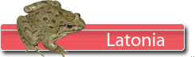
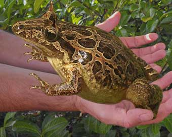
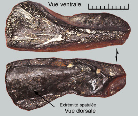

|
  |
||
 |
|
||
 Un discoglosse dans le miocène
 Latonia est un discoglossidé. Ces animaux sont des anoures à l'allure intermédiaire entre les grenouilles et les crapauds. Le genre Latonia est connu depuis l'oligocène jusqu'au pliocène, ce qui montre une grande stabilité du genre. Latonia gigantea est connue depuis le MN4.Le secret de la longévité de Latonia peut être trouvé dans l'observation des Discoglosses actuels. Ils vivent à proximité de rivières ou d'étendues d'eau douce mais en cas d'assèchement, ces animaux peuvent vivre un certain temps dans d'autres milieux humides (forêts, montagne…). Ils montrent une bonne réponse adaptive aux changements de milieux.
La grenouille plus grosse que le boeuf ?  Le fossile montré ici illustre assez bien cette propriété. Il s’agirait de l’extrémité d’un angulosplénial (anciennement angulo-articulaire) de Latonia. En fait il n’en reste pas grand-chose si ce n’est l’extrémité proximale spatulée et donc il subsiste un doute sur la réalité de cette détermination. Mais s’il s’agit vraiment de cet os, et si on interpole l’échelle de ce fragment à l’animal en entier, on obtient une grenouille de 28 cm entre le museau et l’extrémité pelvienne. Un véritable monstre dans les étangs du miocène
C'était aussi une bête à corne!...
Cet os est un révélateur de l'état de maturité chez Latonia. La surface externe de l'os est ornée de cratères chez les juvéniles, puis avec la maturité, apparaissent de petits tubercules donnant un aspect caractéristique. Vers l'avant, les tubercules ont tendance à fusionner et à s'organiser en crêtes parallèles. Et puis aussi chez les vieux individus, 2 protubérances se développent au dessus des yeux à la manière de cornes, comme les espèces actuelles de Certophrys, des grenouilles fouisseuses. Sur l'os, on peut aussi parfois observer des petits puits, les foramens fronto-pariétaux, comme il en existe un sur ce fossile. Ces trous ne sont pas systématiques et se répartissent de manière imprévisible sur l'os. La fin de Latonia? Au début du miocène, les discoglossidés sont beaucoup plus abondants que les grenouilles vraies, à l'inverse de maintenant. C'est alors Latonia le genre dominant. Puis progressivement Latonia va disparaître. Il est difficile de certifier les causes de la disparition de Latonia. Mais la saisonnalité marquée de la fin du tertiaire a dû contribuer à cette extinction. Extinction ? Pas si sûr. Il existe une hypothèse selon laquelle les actuels discoglosses sont en fait des Latonias juvéniles. Le cycle de développement chez Latonia était assez long. Au départ un œuf, puis la phase têtard, et enfin le développement progressif de l'adulte illustré par l'ornementation des fronto-parietaux et des maxillaires. En réponse à l'apparition de saisons marquées, Latonia aurait pu simplement accélérer sa maturité sexuelle avant le développement adulte complet pour gagner du temps sur le cycle annuel. Ainsi pourraient être apparus les discoglosses. |
|||